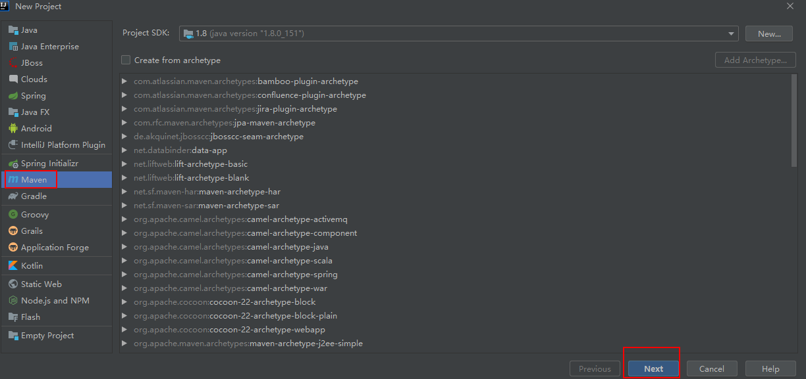
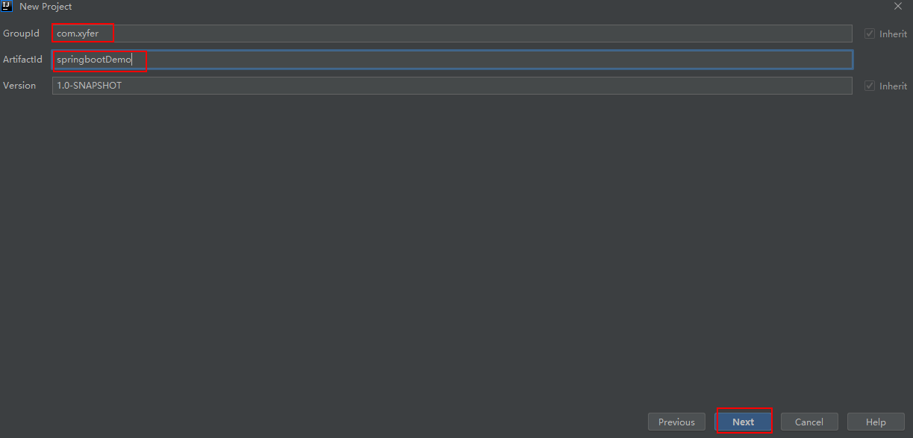
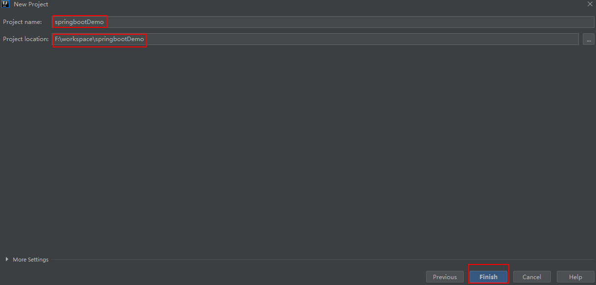
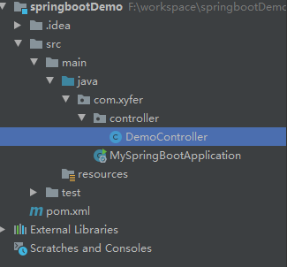
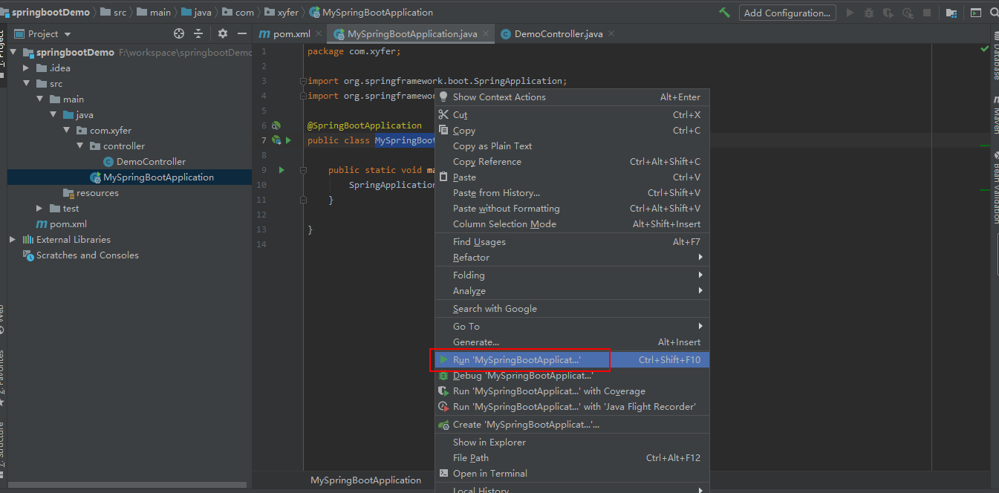
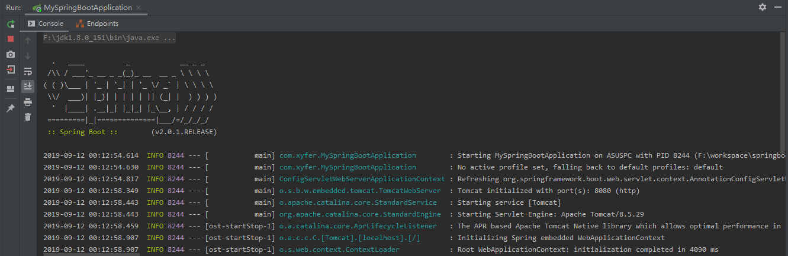
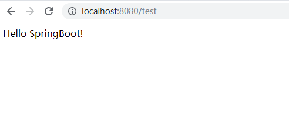

作为开发人员，大家都知道，SpringBoot是基于Spring4.0设计的，不仅继承了Spring框架原有的优秀特性，而且还通过简化配置来进一步简化了Spring应用的整个搭建和开发过程。另外SpringBoot通过集成大量的框架使得依赖包的版本冲突，以及引用的不稳定性等问题得到了很好的解决。
SpringBoot的特点：
为基于Spring的开发提供更快的入门体验
开箱即用，没有代码生成，也无需XML配置。同时也可以修改默认值来满足特定的需求
提供了一些大型项目中常见的非功能性特性，如嵌入式服务器、安全、指标，健康检测、外部配置等
SpringBoot不是对Spring功能上的增强，而是提供了一种快速使用Spring的方式
下面给大家介绍一下，SpringBoot整合SpringMVC的过程：
一、创建项目
1、使用IDEA创建一个Maven工程

2、项目的相关信息填写一下；

3、点击Finish，等待项目创建完成；

二、项目依赖配置
1、SpringBoot要求，项目要继承SpringBoot的起步依赖spring-boot-starter-parent；
<!--SpringBoot的起步依赖spring-boot-starter-parent-->
<parent>
<groupId>org.springframework.boot</groupId>
<artifactId>spring-boot-starter-parent</artifactId>
<version>2.0.1.RELEASE</version>
</parent>2、同时整合SpringMVC，要导入web的启动依赖；
<dependencies>
<!--web的启动依赖-->
<dependency>
<groupId>org.springframework.boot</groupId>
<artifactId>spring-boot-starter-web</artifactId>
</dependency>
</dependencies>3、导入坐标后pom.xml文件为：
<?xml version="1.0" encoding="UTF-8"?>
<project xmlns="http://maven.apache.org/POM/4.0.0"
xmlns:xsi="http://www.w3.org/2001/XMLSchema-instance"
xsi:schemaLocation="http://maven.apache.org/POM/4.0.0 http://maven.apache.org/xsd/maven-4.0.0.xsd">
<modelVersion>4.0.0</modelVersion>
<!--SpringBoot的起步依赖spring-boot-starter-parent-->
<parent>
<groupId>org.springframework.boot</groupId>
<artifactId>spring-boot-starter-parent</artifactId>
<version>2.0.1.RELEASE</version>
</parent>
<groupId>com.xyfer</groupId>
<artifactId>springbootDemo</artifactId>
<version>1.0-SNAPSHOT</version>
<dependencies>
<!--web的启动依赖-->
<dependency>
<groupId>org.springframework.boot</groupId>
<artifactId>spring-boot-starter-web</artifactId>
</dependency>
</dependencies>
</project>三、编写java代码
1、编写SpringBoot的引导类，以便启动SpringBoot项目；
package com.xyfer;
import org.springframework.boot.SpringApplication;
import org.springframework.boot.autoconfigure.SpringBootApplication;
@SpringBootApplication
public class MySpringBootApplication {
public static void main(String[] args) {
SpringApplication.run(MySpringBootApplication.class);
}
}2、编写Controller层的代码；
package com.xyfer.controller;
import org.springframework.stereotype.Controller;
import org.springframework.web.bind.annotation.RequestMapping;
import org.springframework.web.bind.annotation.ResponseBody;
@Controller
public class DemoController {
@RequestMapping("/test")
@ResponseBody
public String test(){
return "Hello SpringBoot!";
};
}3、至此，SpriingBoot的简单项目搭建完成，项目目录结构如下；

SpringBoot默认扫描引导类MySpringBootApplication.java同级包及其子包，所以controller层能被扫描到；
四、启动项目，进行测试
1、启动引导类，进行测试；

2、当控制台打印出如下信息时，证明SpringBoot项目启动成功；

3、在浏览器输入地址：http://localhost:8080/test，访问成功！

至此，一个简单的SpringBoot项目搭建完成！